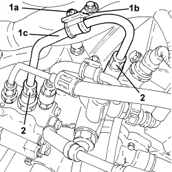

1056F76 HIGH PRESSURE PIPE FROM PRESSURE PUMP TO SINGLE FUEL MANIFOLD PIPE - R.R.
- Path
- Procedures > 10 ENGINE > 1056 PETROL INJECTION SYSTEM > 1056F PETROL DIRECT INJECTION SYSTEM > 1056F76 HIGH PRESSURE PIPE FROM PRESSURE PUMP TO SINGLE FUEL MANIFOLD PIPE - R.R.
- Kind
- repair procedure (removal / refitting; the operation number is the code)
- Applies to
- engines: 2.2 JTS, 3.2 JTS; all production periods
- Interactive page
- https://sloeber94.github.io/elrnDB-aBrrSpdr/en/#/946001929
Applies to: engines: 3.2 JTS; all production periods
 Removing
Removing
 Refitting
Refitting1. Undo the nut (1a) fixing the bracket (1b) to the fuel manifold pipe high pressure rigid pipe for the left cylinder head (1c).
2. Undo the connectors and remove the fuel manifold pipe high pressure rigid pipe for the left cylinder head (1c).

Applies to: engines: 3.2 JTS; all production periods
Refitting
Removing- Place the fuel manifold pipe high pressure rigid pipe for the left cylinder head in position and tighten the connectors.
- Tighten the nut fixing the bracket to the fuel manifold pipe high pressure rigid pipe for the left cylinder head.
Applies to: engines: 2.2 JTS; all production periods
Topics linked from this page (1)
Topics that link to this page (7)
- 1036C10 CAMSHAFTS IN CAMSHAFT HOUSING - R.R - INCLUDES CAMSHAFT HOUSING REPLACEMENT, IF NECESSARY
- 1056F61 LEFT CYLINDER HEAD FUEL MANIFOLD PIPE - R.R.
- 1056F62 RIGHT CYLINDER HEAD FUEL MANIFOLD PIPE - R.R.
- 1056F66 LEFT CYLINDER HEAD INJECTOR SET - R.R.
- 1056F67 RIGHT CYLINDER HEAD INJECTOR SET - R.R.
- 1056F72 PRESSURE PUMP - R.R.
- 1072B21 AIR INTAKE FUEL MANIFOLD INTERGRATED DUCT R R AND REPLACE GASKET